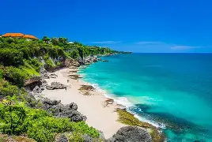

Bali
Bali adalah pulau wisata paling ikonik di Indonesia perpaduan pantai berpasir, budaya Hindu yang kental, dan kuliner khas yang memanjakan. Dari sunset di Kuta dan Canggu, ke ketenangan Ubud dengan sawah terasering dan galeri seni, hingga petualangan laut di Nusa Penida, semuanya dekat dan mudah dijangkau.
Foto Utama

Galeri Foto
Aktivitas
- Sunset di Pantai Kuta / Canggu
- Wisata budaya di Ubud
- Snorkeling di Nusa Penida
|